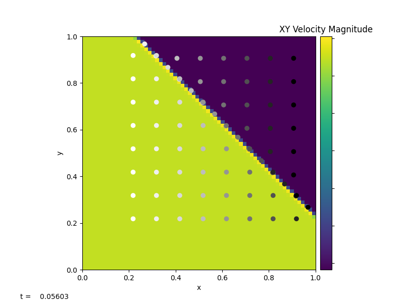

Burgers’ Equation#
Burgers’ Equation is a nonlinear hyperbolic equation. It has the same form as the advection equation, except that the quantity being advected is the velocity itself.
Inviscid Burgers#
A 2D inviscid Burgers’ Equation has the following form:
Here we have two 2D advection equations, where the x-velocity, \(u\), and y-velocity, \(v\), are the two quantities that we wish to advect with.
pyro.burgers is modified based on the pyro.advection with a different Riemann solver and timestep restriction.
Since velocity is no longer a constant, the timestep is now restricted to the each minimum velocity in each cell:
The main difference of Burgers equation compared to the linear advection equation is the creation of shock and rarefactions due velocity been non-constant. This introduces a slightly different Riemann’s problem which depends on shock speed by using the Rankine-Hugoniot jump condition.
The parameters for this solver are:
section:
[advection]option
value
description
limiter2limiter (0 = none, 1 = 2nd order, 2 = 4th order)
section:
[driver]option
value
description
cfl0.8advective CFL number
section:
[particles]option
value
description
do_particles0particle_generatorgrid
supported problems#
converge#
Setup a smooth velocity field (each component is an exponential). This can be used to test convergence of the solver.
test#
Create a shock moving diagonally (from lower-left to upper-right) through the domain.
tophat#
Initialize a circular “tophat” region that will drive a shock.
Example#
The figure above is generated using burgers/problems/test.py,
which is used to test the validity of the solver. Bottom-left of the
domain has a higher velocity than the top-right domain. With
\(u_{i,j}=v_{i,j}\), the wave travels diagonally to the top-right
with a constant velocity that is equal to the shock
speed. burgers/problem/verify.py can be used to calculate the wave
speed using outputs from test.py and compare to the theoretical
shock speed.
Viscous Burgers#
A 2D viscous Burgers’ Equation has the following form:
The viscous Burgers’ equation has an additional velocity diffusion term on the RHS compared to the inviscid Burgers’ equation. Here \(\epsilon\) represents the constant viscosity.
pyro.burgers_viscous is inherited from
pyro.burgers, where we added an additional diffusion term
when constructing the interface states. We then solve for diffusion
along with the extra advective source to the Helmholtz equation by
using the Crank-Nicolson discretization and multigrid solvers.
The parameters for this solver are:
supported problems#
converge#
Setup a smooth velocity field (each component is an exponential). This can be used to test convergence of the solver.
test#
Create a shock moving diagonally (from lower-left to upper-right) through the domain.
tophat#
Initialize a circular “tophat” region that will drive a shock.
Example#

The figure above is generated using
burgers_viscous/problems/test.py, which has the identical setup as
in burgers/problems/test.py. With diffusion added to the system,
we see the shock (discontinuity) is smeared out as system evolves.